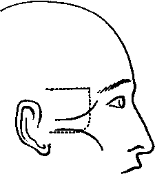

A Dissection To Expose The Structures That Are Seen On The Removal Of The Outer Wall Of The Orbit
Description
This section is from the book "A Manual Of Dissections Of The Human Body", by R. E. Carrington. Also available from Amazon: A manual of dissections of the human body.
A Dissection To Expose The Structures That Are Seen On The Removal Of The Outer Wall Of The Orbit
Position
The body lying upon its back, and the face rotated to the opposite side.
I. Skin Incisions
1. From the external angular process of the Frontal bone horizontally backwards an inch above the Zygoma, and parallel with it to a point one inch above its root.
No. 1.
2. From just outside the outer canthus, obliquely downwards and backwards, over the Malar process, to a quarter of an inch below the lower border of the Zygoma, and horizontally backwards to its root. 3. A vertical incision joining the anterior extremities of Nos. 1 and 2. Reflect the flap backwards, and expose the superficial fascia; clear this away, and the deep fascia over the muscles, and expose—
1. The Zygoma at the lower part of the surface exposed.
2. The lateral prolongation of the aponeurosis of the Occipito-frontalis muscle running down to be attached to the preceding. On the removal of this, the Temporal fascia is displayed.
3. The outer part of the Orbicularis palpebrarum muscle at the outer canthus.
4. The upper fibres of the Masseter muscle attached to the lower border of the Zygoma.
5. The anterior part of the Attrahens aurem muscle above the Zygoma, at the posterior part of the dissection.
6. A small portion of the Parotid gland, covered by its fascia below the Zygoma at the posterior part.
7. Cutaneous arteries from— a. The Anterior Temporal above the Zygoma.
b. The Transverse Facial below the Zygoma.
c. The Lachrymal at the outer canthus.
8. Temporal branches of the Facial nerve passing upwards over the Zygoma, and Malar branches running over the Malar process.
9. The Temporal branch of the Temporo-malar nerve becoming cutaneous a finger's breadth above the Zygoma, and its communication with a Temporal branch of the Facial nerve.
10. The Malar branch of the Temporo-malar nerve, cutaneous over the Malar process, and communicating with a Malar branch of the Facial nerve.
11. A small twig of the Lachrymal nerve at the outer canthus.
II
a. Remove the part of the Attrahens anrem muscle exposed.
b. Raise the fibres of the Orbicularis palpebrarum muscle and turn it forwards, dissecting out more fully the Malar branch of the Temporo-malar nerve.
c. Detach the Masseter muscle from the lower border of the Zygomatic and the Malar processes.
d. Cut through the Temporal fascia from the upper border of the Zygoma. It will be found to consist of two layers, and between them will be found some fat, the Temporal branch of the Temporo-malar nerve behind the Frontal process of the Malar bone, and a small twig of the Middle Temporal artery.
e. Saw through the Zygoma in front and behind and remove it, and clear away the fat beneath it in front of the Temporal muscle, extending down upon the Superior Maxilla. There will now come into view—
1. The part of the Malar bone previously covered by the Orbicularis muscle.
2. The tendon of the Temporal muscle attached to the Coronoid process of the lower jaw.
3. The Masseteric artery, vein, and nerve behind the Coronoid process, passing out through the Sigmoid notch, seen entering the muscle or divided.
III
Remove completely the Temporal muscle from its origin and insertion as far as it is displayed. The Middle Temporal artery will be taken away with it, and there will then be exposed—
1. The posterior surface of the Orbital process of the Malar bone, the outer surface of the Ala major of the Sphenoid bone as low down as the Pterygoid ridge, the anterior part of the Squamous portion of the Temporal bone, and a small portion of the outer surface of the Superior Maxilla.
2. The upper head of the External Pterygoid muscle.
3. The end of the second portion of the Internal Maxillary artery, and the Alveolar branch of the third portion upon the Superior Maxilla.
4. Twigs of the Lachrymal artery, passing through foramina in the Malar bone anastomosing with the Deep Temporal.
5. The anterior and posterior Deep Temporal arteries at the front and back parts of the Temporal fossa, and their veins running into.
6. A portion of the Pterygoid plexus of veins upon the External Pterygoid muscle, joining in front with the Alveolar plexus.
7. The anterior and posterior Deep Temporal nerves with the corresponding arteries.
8. Oftentimes a small twig of the Masseteric nerve to the Temporal muscle behind the posterior Deep Temporal nerve.
9. The two Posterior Dental branches of the second division of the Fifth nerve lying upon the Superior Maxilla.
10. The temporal branch of the Temporo-malar nerve is again seen piercing the Malar bone.
IV
a. Draw forwards the Orbicularis palpebrarum muscle, cut through the External Tarsal ligament, and, with the handle of the scalpel, separate the Dura mater of the Orbit from the outer wall, to prevent injuring it in the removal of the bone.
b. Chip away with the chisel the Malar bone at the exit of the Malar branch of the Temporo-malar nerve, and follow this nerve through the bone. Its division into Temporal and Malar branches may thus be traced, and the nerve itself followed, into the inferior and outer angle of the Orbit.
c. Now proceed to remove the portions of bone forming the outer wall of the Orbit with the chisel. This will be done piecemeal, but the following may be taken as the requisite incisions:—
1. A horizontal one at the upper part of the exposed surface, commencing in front at the suture between the External Angular process and the Malar bone, and ending behind at the articulation between the Squamous part of the Temporal bone and the Ala major of the Sphenoid bone. This is carried onwards until it reaches the Sphenoidal fissure behind.
2. A second horizontal one at the lower part of the dissection, commencing in front at the anterior part of the Malar process, passing through it, running parallel with No. 1, and ending behind at a point corresponding to the upper. This opens up the Spheno-maxillary fissure.
3. A vertical incision joining the hinder extremities of Nos. 1 and 2.
The middle fossa of the skull is opened up slightly.
There will now be exposed—
1. The Dura mater of the Orbit.
2. The Infra-orbital branch of the third part of the Internal Maxillary artery entering the Infra-orbital foramen, and the commencement of the Descending Palatine branches.
3. The second division of the Fifth nerve with the Infraorbital artery, entering the same foramen, and the following branches ; the whole of the Temporo-malar and the upper portions of the two Posterior Dental.
4. Two or three twigs from Meckel's ganglion to the periosteum of the Orbit. Their source, however, is not seen.
V
Remove the periosteum of the Orbit as far back as the Sphenoidal fissure; here it will be seen to be continuous with the Dura mater of the skull. Clear away fat. There will now be exposed—
1. The Eye-ball.
2. The External and Inferior Recti muscles outside and below the eye-ball respectively, and the Inferior Oblique muscle passing below the Inferior, and internal to the External Rectus muscle.
3. The Lachrymal gland at the upper and outer part of the orbit.
4. The Lachrymal nerve and artery above, the nerve joining with the Temporo-malar.
5. The nerve from the Third to the Inferior Oblique muscle entering its posterior border.
Continue to: